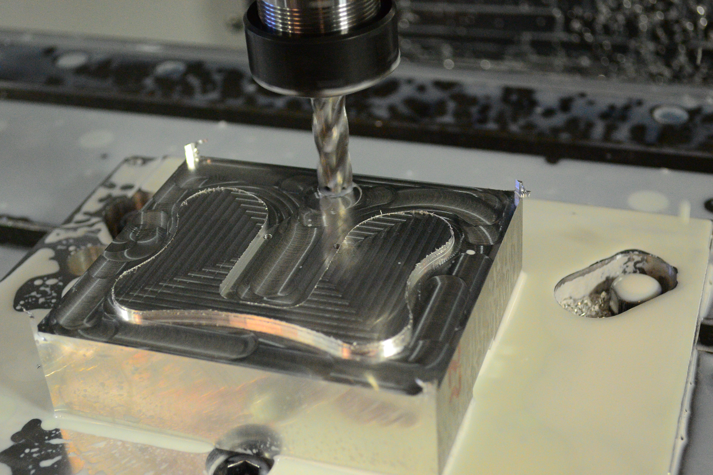

Train
In room servicebot for ME 318
For ME 318 the CNC machining class at Stanford I decided to create the prototype of an in room service robot. This robot is a train car which rides along a rail mounted at chest height in a room and has a slot which accepts different kinds of tool heads. Simple tools would be things such as small trash bins, holders for hex keys, and beverage holders, but a tool could also be a small robotic arm. For example it would be extremely interesting to mount my Canny robot to this train to create something like a robotic spot light. This is all possible because this train has a male pogo-pin connector integrated into the tool slot allowing for both communications and power connections between the train and tools. The robot moves via rack and pinion drive which allows for quick and percise movement and absolute position is known by using a reflective IR sensor to count the pinion teeth. I made the first prototype of this idea of mine for this class and I fully intend to make revision 2 in the future! Completed Winter of 2014.


